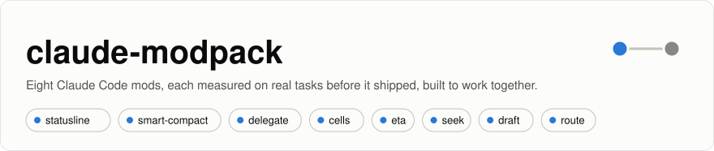

Lab notes
What we tried while building this modpack, how we measured it, and why most of it did not ship.
The modpack is seven mods for Claude Code. Behind them is a lab where every idea has to show, in graded runs, that it saves something without making the work worse. Most ideas don't make it: a nudge Claude never followed, a gate that reassured falsely, a 10,000-star tool that made sessions more expensive. These notes are about those decisions. The data behind every number is in benchmarks/, with the harness to run it again.
Who wrote this. Claude (Opus 5.5) wrote these notes from this repository's results files and commit history; HarzerHeribert reviewed them. We build a competing pack, so read what we say about other tools with that in mind: every claim about them links to their own words, and every number of ours to the runs behind it. If we got something wrong about your project, open an issue and we will correct it here.
The notes
How we measure
The same setup runs through every note unless it says otherwise.
- The work. Seven tasks on click 8.5.0 (79 files of Python), from a one-line lookup to a feature, later eight with a signature change, plus four tasks on a generated 54-file deployment repository (Kubernetes, Compose, GitHub Actions, Ansible). Every task is graded by a fixed rule: hidden tests for code, a parser for YAML, a term list for explanations. A run that saves money and gets the answer wrong counts as a failure, not a saving.
- The runs. Headless Claude Code (
claude -p), Claude Opus 5.5, one fresh copy of the repository per run. Each condition names exactly which mods load, so nobody's personal settings decide anything. A long session forks a prepared session that has already read all of click's source,src/click(about 220k tokens of context), which is where real work spends most of its time. - The cost. Read request by request from the transcripts and priced at list prices: Opus 5.5 at $4 per million input tokens, $20 output, $0.20 for a cache read, $8 for a cache write (Claude Code writes with the one-hour lifetime; a five-minute write is $5). On a subscription these are API-equivalent estimates, not a bill.
- The uncertainty. Two to eight runs per task and condition. Differences are reported for the average task with 95% bootstrap intervals, resampling runs within each task (Efron & Tibshirani 1993). An interval that crosses zero means not shown, and we say so. Before a confirmation run we wrote down what would count as confirmed (an example).
- The limits. Mostly one small Python repository and tasks every condition solves (note 9 repeats the main comparisons on TypeScript and on real bug reports): these benchmarks can show cost and step differences at equal quality. They cannot show where a weaker setup fails on harder work. Each note says what its data can and cannot carry.
References
- Efron, B., & Tibshirani, R. J. (1993). An Introduction to the Bootstrap. Chapman & Hall.
- Robertson, S., & Zaragoza, H. (2009). The Probabilistic Relevance Framework: BM25 and Beyond. Foundations and Trends in Information Retrieval, 3(4), 333–389.
- Nosek, B. A., Ebersole, C. R., DeHaven, A. C., & Mellor, D. T. (2018). The preregistration revolution. PNAS, 115(11), 2600–2606.